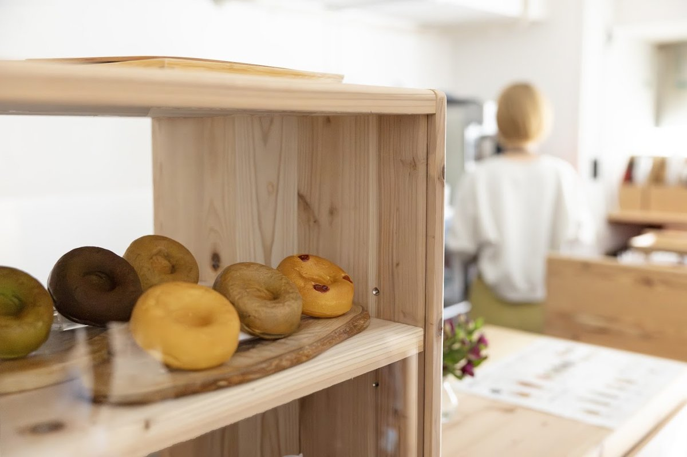
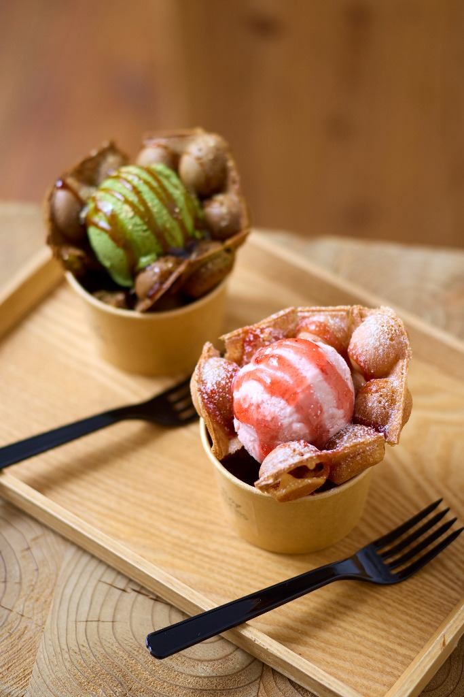
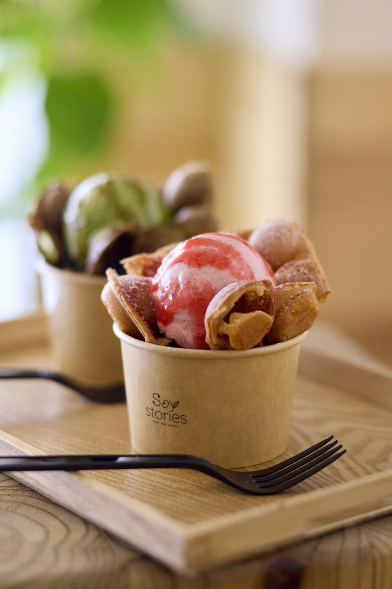
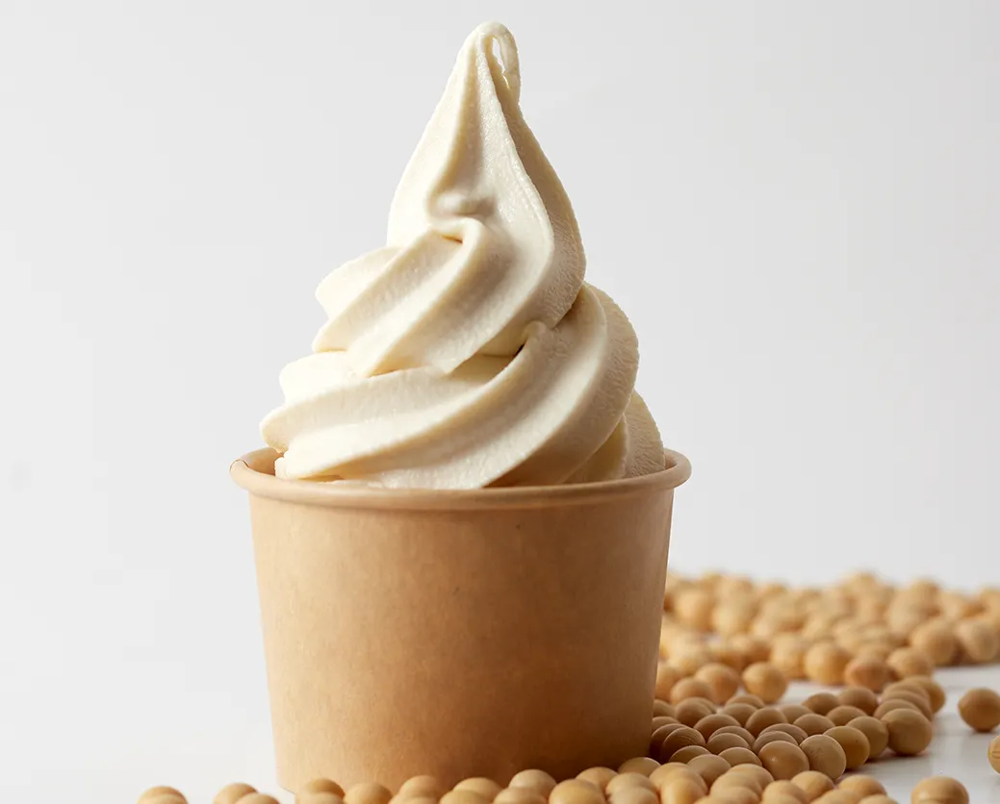
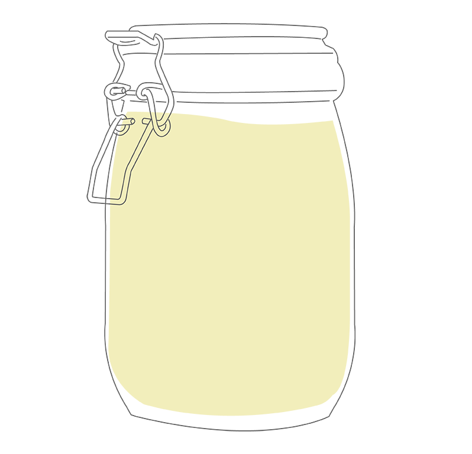
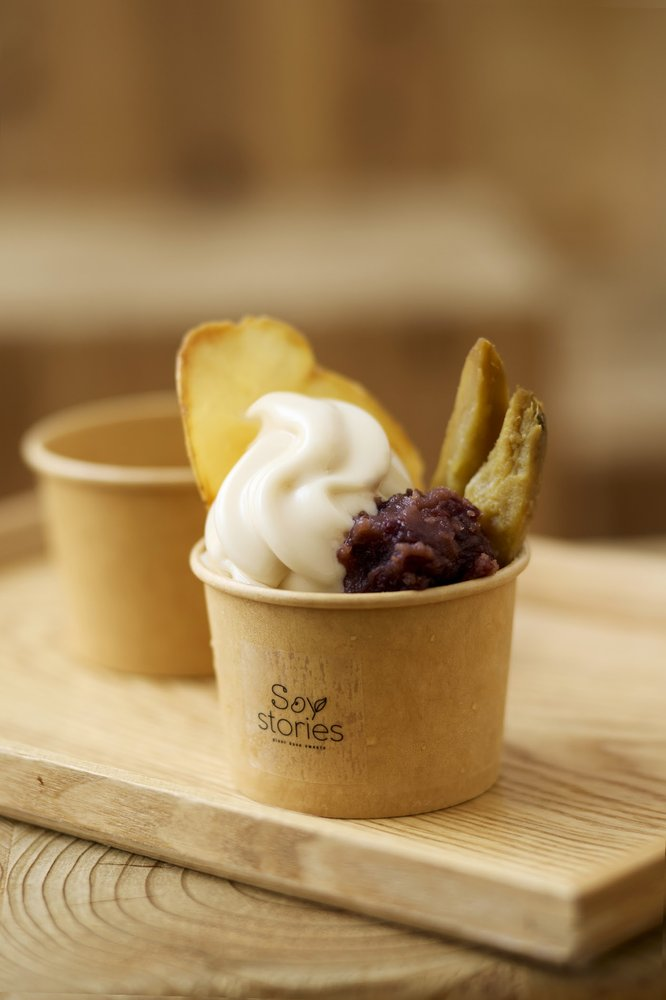
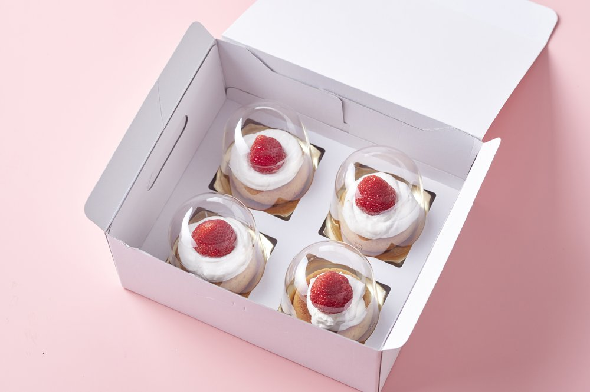
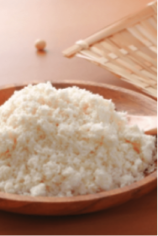

人気No.1 看板メニュー
ワッフル純豆乳ソフト
中（ハーフ）¥690 / 大（フル）¥900 （税込）
焼きたてアツアツの米粉バブルワッフルと、ひんやり濃厚な純豆乳ソフトを組み合わせた看板メニュー。新潟県産米粉100%のサクサクもちもち生地で、朝しぼり豆乳のなめらかなソフトクリームを包みました。和のトッピング5種（抹茶・きな粉・ほうじ茶・チョコソース・黒蜜）を無料でお付けします。スイーツと一緒にご注文いただくと、カフェドリンク全品がセット価格¥330になります。
毎日 11:00〜22:00 営業
福岡・薬院 · 地下鉄薬院大通駅 2番出口から徒歩2〜3分
新潟県産米粉の焼きたてバブルワッフル、搾ってから2日以内の九州産豆乳を使った純豆乳ソフト、ワッフルアイス・ホイップ、焼きドーナツ、米粉どら焼き、米粉ジェラート、カフェドリンク。小麦・乳・卵・白砂糖は使用していません。
Googleマップ評価 4.7（口コミ270件以上）· HappyCowにも掲載
店内のご紹介
薬院にある、あたたかな雰囲気のスイーツ店です。ご注文を受けてから焼き上げる米粉のバブルワッフルを、木の席で焼きたてのままどうぞ。焼きドーナツは、ボックスに詰めてお持ち帰りいただけます。






メニューと価格
価格はすべて税込です。
人気No.1 看板メニュー
中（ハーフ）¥690 / 大（フル）¥900 （税込）
焼きたてアツアツの米粉バブルワッフルと、ひんやり濃厚な純豆乳ソフトを組み合わせた看板メニュー。新潟県産米粉100%のサクサクもちもち生地で、朝しぼり豆乳のなめらかなソフトクリームを包みました。和のトッピング5種（抹茶・きな粉・ほうじ茶・チョコソース・黒蜜）を無料でお付けします。スイーツと一緒にご注文いただくと、カフェドリンク全品がセット価格¥330になります。

¥660 – ¥690
焼きたて米粉ワッフルにヴィーガンアイスをのせた「ワッフルアイス」4種（ストロベリー・チョコ・抹茶・黒ゴマ 各690円）と、ふんわり豆乳ホイップの「ワッフルホイップ」2種（ストロベリー・キャラメルナッツ 各660円）。

プレーン ¥660 / 各種 ¥690
新潟県産米粉100%と豆乳で、ご注文ごとに香ばしく焼き上げます。プレーン（660円）、ココア・抹茶・黒ゴマ（各690円）の4種類。※箱でお持ち帰りの方は箱代+100円。

中 ¥460 / 大 ¥690
搾ってから48時間以内に加工した、無添加の濃厚豆乳を使用。クセがなくすっきりとした後味です。和の無料トッピング5種付き。

¥660
香り高いオーガニックアイスコーヒーの上に、朝しぼり豆乳の純豆乳ソフトをたっぷりのせた贅沢な一杯。

¥330 – ¥430
もちもち食感のプレーンドーナツ6種（各330円・ナッツ不使用）と、大豆・マカダミアナッツ不使用で常温約1週間日持ちするしっとりケーキドーナツ6種（各430円）。

各 ¥460
米粉とアーモンドでふんわり焼き上げた生地に、あんこや豆乳クリームをはさんだ4種類（あんクリーム・いちごクリーム・抹茶あんこ・あんこ）。半解凍でどら焼きアイスとしても絶品です。

各 ¥490
なめらかな口溶けの米粉ジェラート8種類。フルーツ系4種は大豆・ナッツ類不使用（うちベリーミックスは特定原材料等29品目不使用）です。

¥360 – ¥390 / セット ¥330
オーガニックコーヒー、黒糖ソイラテ、抹茶ソイラテ、大豆不使用の甘酒ラテ、レモンスカッシュ、ミックスベリーティー、トロピカルソーダ。スイーツとセットで全品¥330！
ワッフル純豆乳ソフトと純豆乳ソフトには、追加料金なしでお付けします。
 抹茶
抹茶
きな粉大豆を含みます ほうじ茶
ほうじ茶 チョコソース植物性
チョコソース植物性原材料とアレルギー対応
小麦・乳・卵を使わない厨房のルール
SoyStoriesのすべての商品は100%植物性（ヴィーガン）でグルテンフリーです。小麦、乳、卵、そしてはちみつやゼラチンなどの動物由来の原材料は、厨房に持ち込みません（小麦は、スタッフ個人の食事も含みます）。白砂糖も使用していません（てんさい糖や植物由来の甘味料で、やさしく甘みをつけています）。
避けたい原材料をタップして絞り込む（9品目対応）：
季節限定メニューには、オレンジやカシューペーストなど、ほかの原材料を使う場合があります。ご注文の前にスタッフへお尋ねください。FoodHugのアレルギー情報ページを見る →
季節限定
定番メニューのほかに、季節限定のパフェ、バブルワッフルのカップ、ホット／アイスのドリンクもご用意しています。
今の季節限定メニューはInstagramで · @soystories_yakuin →


テイクアウト・お土産

常温で約1週間保存できます
アーモンドと米粉でつくるしっとりしたケーキドーナツ（1個430円・大豆不使用）は、常温で約1週間保存できます。旅行先のホテルや新幹線、飛行機での移動にも持ち運びやすく、お土産にもおすすめです。
「セリアック病の私は、そうではない夫と息子と一緒に訪れました。バブルワッフルも、ソイアイスも、ドーナツも、家族みんな大満足！乳製品不使用だと知らなければ気づかないほどクリーミーで、フレーバーも抜群でした。タクシーで来る価値は間違いなくあります！」
「ワッフルと純豆乳ソフトクリームが特においしく、温かさとクリーミーさのバランスが絶妙です。英語のメニューがあるので注文もとても簡単で、スタッフの皆さんも本当に丁寧で親切でした！」
「欧米でよくある、味気ない大豆風味のアイスクリームとはまったく別物です。このお店は別格！注文ごとに焼くサクサクのワッフルに、自由に試せる無料のトッピングのトレーも付いてきて、天国にいる気分でした。」
「このメニューの中に、おいしくないものがあるなら見つけてみて、と言いたいくらい！SoyStoriesのおかげで、アレルギーや食事制限のある人も甘いものを楽しめます。遅めの夕食のあとにヴィーガンのデザートを食べられて、本当にうれしかったです。」
「ワッフルはとてもサクサクで、甘すぎません。私のお気に入りは、抹茶アイスと、自分で選べるトッピングのトレー（黒糖シロップがおすすめ！）。レモンのドーナツも食べましたが、アーモンドプードルの生地でしっとりしていて、おいしかったです。」
「アイスが豆乳でできているなんて、まったくわかりません。とてもおいしくて、ワッフルも絶品です。滞在中に、抹茶アイスをのせたワッフルを2回も食べてしまいました。やめられませんでした！オーナーさんはとてもフレンドリーで、穏やかな雰囲気のお店です。」
「私は豆乳ホイップのワッフル、パートナーはラージサイズのソフトクリームのワッフルを注文しました。トッピングと英語のメニューも持ってきてくれました。もう一度来店して、ホテル用にケーキドーナツを買いました。お手頃な価格で、素敵なスタッフさんです！」
「私はグルテンフリーでもヴィーガンでもありませんが、いただいたデザートはどれも本当においしかったです。両親と3人で、黒ごま、いちご、チョコのバブルワッフルを食べました。どれも風味豊かでクリーミー。どなたにもおすすめです！」
「このアイス、本当に本当においしい！私たちはアメリカ出身でヴィーガン歴13年ですが、正直、この抹茶アイスはこれまで食べたヴィーガンアイスの中で一番かもしれません。帰国したら、このお店を夢に見そうです。」
「ここのケーキドーナツは、ヴィーガンかどうかに関係なく、これまでの人生で食べた中で一番おいしいドーナツです。ほどよくずっしり、しっとりしていて、甘さもちょうどいい。」
GoogleマップとHappyCowに投稿された旅行者の口コミから抜粋し、日本語に訳したものです（原文は英語）。個人の感想です。アレルギーのある方は、必ず商品ごとの原材料をご確認ください。
当店のこだわり
私たちソイストーリーズのミッションは、アレルギーやヴィーガンなど、食に制限がある方、素材にこだわる方にとって「ユメミタイ」と思える場所をつくること。みんなで一緒に食べられる幸せ。それをカタチにするため、私たちは日々、お店に立っています。
当店では全商品グルテンフリー＆100%植物性素材のSOYスイーツを提供しています。小麦、乳、卵、白砂糖を使用せず、安心してお召し上がりいただける商品づくりを目指しています。



よくあるご質問
はい。SoyStories 薬院店のスイーツとドリンクは、すべて100%植物性（ヴィーガン）です。肉、魚、乳、卵、はちみつ、ゼラチンは、どの商品にも使用していません。
当店の商品はすべて、グルテンフリーの米粉またはアーモンドプードルでつくっており、小麦、乳、卵は厨房に持ち込みません（小麦は、スタッフ個人の食事も含みます）。ただし、同じ厨房で大豆、アーモンド、カシューナッツ、ピスタチオ、マカダミアナッツ、ごま、やまいも、りんご、もも、オレンジを取り扱っているため（特定原材料等29品目基準で開示）、微量のアレルゲンの混入を完全になくすことはできません。重度のアレルギーやセリアック病の方は、商品ごとの原材料をご確認のうえ、ご注文の前にスタッフへご相談ください。
このページの9品目アレルギー絞り込みと店内メニュー全品・特定原材料等29品目一覧表、またはFoodHugのアレルギー情報ページでご確認いただけます。カウンターのスタッフにお尋ねいただくこともできます。
商品によって異なります（日本の特定原材料等29品目に対応して表示しています）。
• 大豆：バブルワッフル、純豆乳ソフト、ワッフルアイス・ホイップ、コーヒーフロート、プレーンドーナツ、米粉どら焼き、ジェラート4種類、ソイラテ2種類に使用しています。大豆不使用なのは、しっとりケーキドーナツ6種類（430円）、フルーツ系ジェラート4種類、オーガニックコーヒー、甘酒ラテ、レモンスカッシュ、ミックスベリーティー、トロピカルソーダです。
• ナッツ類：アーモンドはしっとりケーキドーナツ（430円）、米粉どら焼き（460円）、ワッフルアイス（チョコ）、ジェラート（とろけるショコラ）、ワッフルホイップ（キャラメルナッツ）に使用。カシューナッツ・マカダミアナッツはワッフルホイップ（キャラメルナッツ）に使用（ケーキドーナツはマカダミアナッツ不使用）。ピスタチオはしっとりケーキドーナツのストロベリー・抹茶に使用しています。
• ごま：黒ゴマの焼きたてワッフル、ワッフルアイス（黒ゴマ）、プレーンドーナツ（黒ごま）に使用しています。
• やまいも：もちもちの食感を出すために、プレーンドーナツ6種類（330円）に使用しています。
• りんご・もも：りんごはケーキドーナツ・ワッフルホイップ（ストロベリー）・ジェラート（爽やかりんご）に、ももはジェラート（ジューシーすぎるもも）・トロピカルソーダに使用しています。
白砂糖は使用していません。商品に応じて、てんさい糖、オーガニックのアガベやメープル、天然の植物由来の甘味料でやさしく甘みをつけています。白砂糖を使用していないという意味で、糖分ゼロ・糖類ゼロという意味ではありませんのでご注意ください。
毎日11:00〜22:00の営業で、ラストオーダーは21:45です。定休日はありません。営業時間の臨時変更や特別な休業日は、Instagram（@soystories_yakuin）でお知らせします。
バブルワッフルとソフトクリームは、ラストオーダー（21:45）まで、ご注文のたびにおつくりします。ドーナツやジェラートの一部の味は、夜遅い時間に売り切れることがあります。特定の味やギフトボックスをご希望の場合は、Instagram（@soystories_yakuin）のDMでご連絡ください。
店内はコンパクトで、メイン席が4席、ほかに木のキューブスツールがあります。ベビーカーやスーツケースも店内にお持ち込みいただけます。お一人様あたりの最低注文はなく、シェアも歓迎です。
• バブルワッフル＆ソフトクリーム：ソフトクリームをのせたワッフルはすぐに溶けてしまうため、イートインか店のすぐ外で、できたてをお召し上がりください。焼きたてワッフル単品（660〜690円）は箱でのお持ち帰りも可能です（箱代+100円）。
• しっとりケーキドーナツ（430円）：常温で約1週間保存できます。ホテルでのおやつや新幹線の中、手土産にいちばんおすすめです。
• グルテンフリー米粉どら焼き（460円）：冷凍でお渡しします。常温30分〜1時間（冷蔵1〜2時間）解凍してお召し上がりください。半解凍でどら焼きアイスのように楽しむのもおすすめです。
• プレーンドーナツ（330円）：急速冷凍（または店内で温めて）お渡しします。常温で持ち歩くと自然解凍されますので、冷蔵で保管して3日以内にお召し上がりください。
• カップの米粉ジェラート（490円）：冷凍でお渡しします。保冷剤入りの保冷バッグもご用意しています（4点以上のご購入で無料）。
焼きたてのおいしさそのままに急速冷凍したドーナツを販売しています。その場で食べたい場合は、店内で温めてご提供しますので、スタッフにお声がけください。ホテルやご自宅へ持ち帰る場合は、電子レンジ（600W）で1分ほど温めてお召し上がりください（自然解凍後に軽くトーストしても）。焼きたてのような、もちもちの食感になります。
現金、主要なクレジットカード（Visa、Mastercard、JCB、American Express、Diners Club）、交通系ICカード（Suica、PASMO、ICOCA、SUGOCA、nimoca、はやかけん）、iD、QUICPay、PayPayをご利用いただけます。メニューの価格はすべて税込です。
福岡市地下鉄七隈線の薬院大通駅で降りて、2番出口から薬院六つ角方面へ徒歩2〜3分（約160m）です。天神南駅からは地下鉄で約4分、博多駅からは約9分です。ソフトクリームの光る看板が目印の、1階のお店をお探しください。
カウンターに、英語の紙のメニューをご用意しています。英語ページでは、各商品の「Show staff」ボタンを押すと、日本語の注文画面（店内／テイクアウトの切り替え付き）がスマートフォンに表示されます。
駐車場はございません。お近くのパーキングをご利用ください。
アクセス
Instagram @soystories_yakuin のDMでご連絡ください。お問い合わせ・最新情報は、LINEでも受け付けています。

入口の目印：レンガ造りのマンション（チサンマンション第3博多）の1階。通り沿いで光る白いソフトクリームの看板が目印です。
タクシーでお越しの方は、運転手さんにこの画面をお見せください
〒810-0022
福岡市中央区薬院2丁目2-24
チサンマンション第3博多 1階
SoyStories 薬院店（地下鉄七隈線「薬院大通駅」2番出口から薬院六つ角方面へ徒歩約2〜3分）
ご利用いただけるお支払い方法